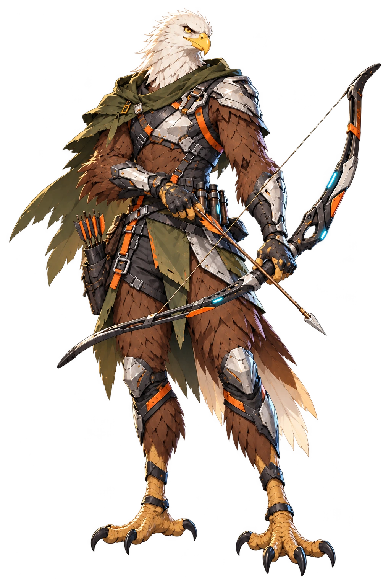
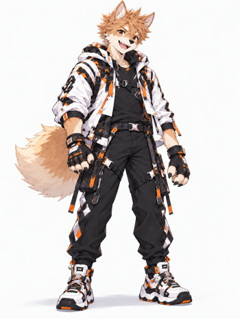

BEAST
PROTOCOL
📍 山岳区画
準備中
昼から開始
開始前
00:30
生存中
生存 10/10
演習エリア：山岳区画 ｜ 素材を集めよう

カイト
Lv.1
🥊 装備 ›
❤️
180/180
⚡
120/120
Lv.1 (0/20)
👊
0
武器：
素手
防具：
なし
ENEMY CONTACT
🤖
0/3
薬草採集
発動
📦 ストック
0/3
📌 製作目標
未設定
📍 移動
🛏️ 休憩
🔧 製作
🩹 治療
⌕ 探索
画面横向き推奨・試作版
メニュー
✕ 閉じる
📱 ↻
iPhoneを横向きにして遊んでね！
装備・アイテム図鑑
試合を始めずに、性能・製作・入手場所を調べる
✕ キャラ選択へ
リセット